Lecture 07 · Radiometer
PowerPoint · PDF · Lab 6 files
1. Radiometer: light, heat and molecular forces
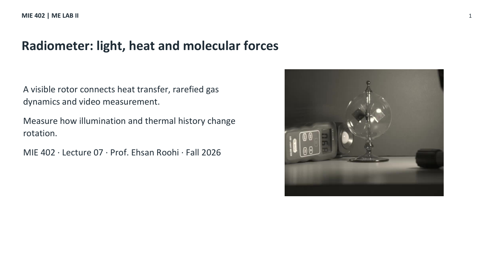
Explanation
A visible rotor connects heat transfer, rarefied gas dynamics and video measurement.
Measure how illumination and thermal history change rotation.
MIE 402 · Lecture 07 · Prof. Ehsan Roohi · Fall 2026
2. A bridge to rarefied-flow research
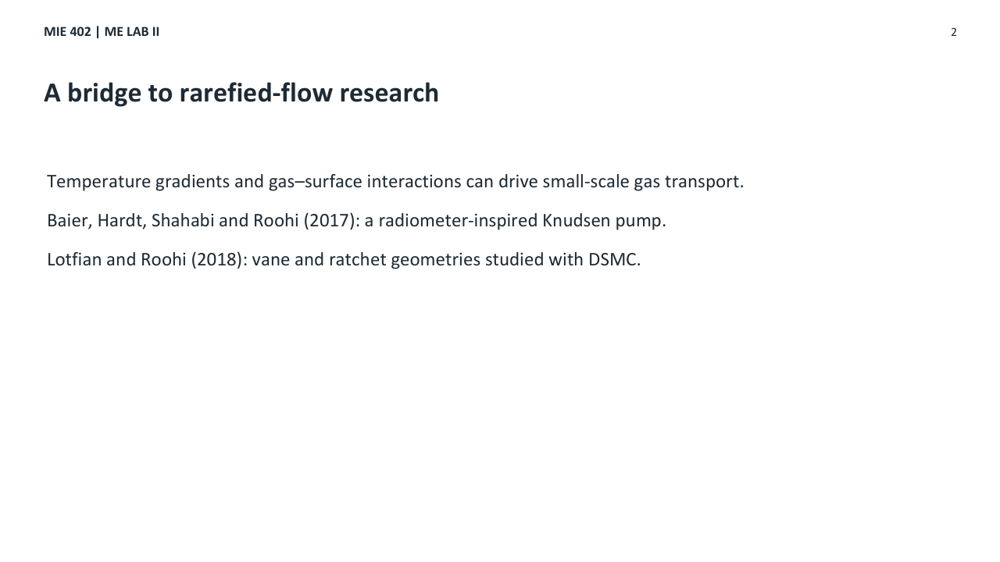
Explanation
Temperature gradients and gas–surface interactions can drive small-scale gas transport.
Baier, Hardt, Shahabi and Roohi (2017): a radiometer-inspired Knudsen pump.
Lotfian and Roohi (2018): vane and ratchet geometries studied with DSMC.
Primary sources: https://doi.org/10.1103/PhysRevFluids.2.033401 ; https://doi.org/10.1017/jfm.2018.880 . These motivate the mechanism. The sealed classroom bulb does not reproduce those research geometries.
3. The equipment already available
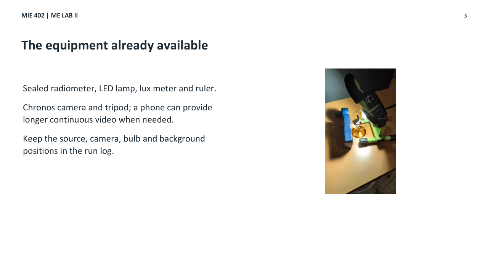
Explanation
Sealed radiometer, LED lamp, lux meter and ruler.
Chronos camera and tripod; a phone can provide longer continuous video when needed.
Keep the source, camera, bulb and background positions in the run log.
4. Prior recording: lamp and optical access
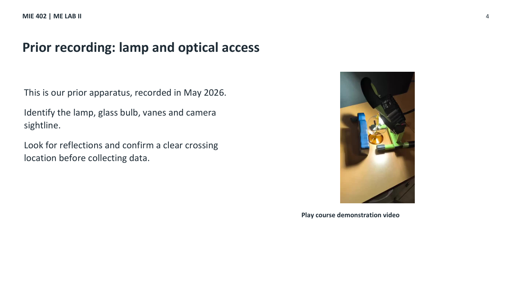
Explanation
This is our prior apparatus, recorded in May 2026.
Identify the lamp, glass bulb, vanes and camera sightline.
Look for reflections and confirm a clear crossing location before collecting data.
Silent 12-second excerpt from video_2026-05-30_12-43-21.mp4. Click the image in PowerPoint or the video link in PDF. This is a visual setup demonstration, not a calibrated run.
5. Prior recording: the vanes in motion
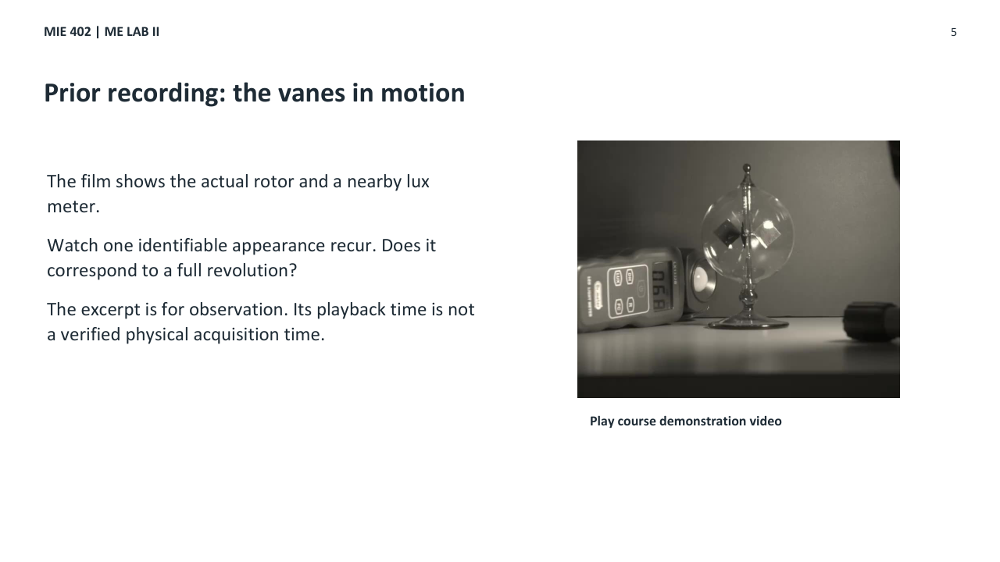
Explanation
The film shows the actual rotor and a nearby lux meter.
Watch one identifiable appearance recur. Does it correspond to a full revolution?
The excerpt is for observation. Its playback time is not a verified physical acquisition time.
Silent 20-second excerpt from source playback seconds 8–28 of vid_2026-05-26_09-16-14.mp4. Exported file is about 60 fps; actual capture fps must come from the acquisition log before quantitative timing.
6. The questions we can answer experimentally
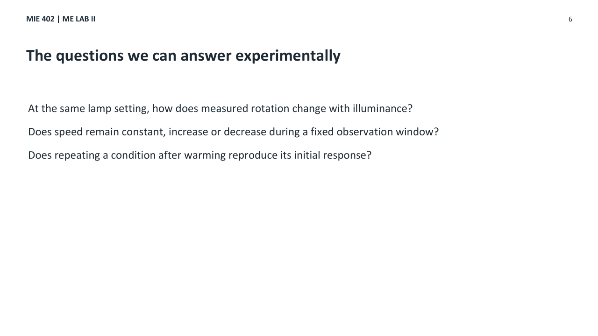
Explanation
At the same lamp setting, how does measured rotation change with illuminance?
Does speed remain constant, increase or decrease during a fixed observation window?
Does repeating a condition after warming reproduce its initial response?
We measure speed and its history, not internal pressure, vane temperature, absolute gas torque or optical efficiency. A disagreement with a constant-torque model is a physical question, not automatically a tracking error.
7. What drives the vanes
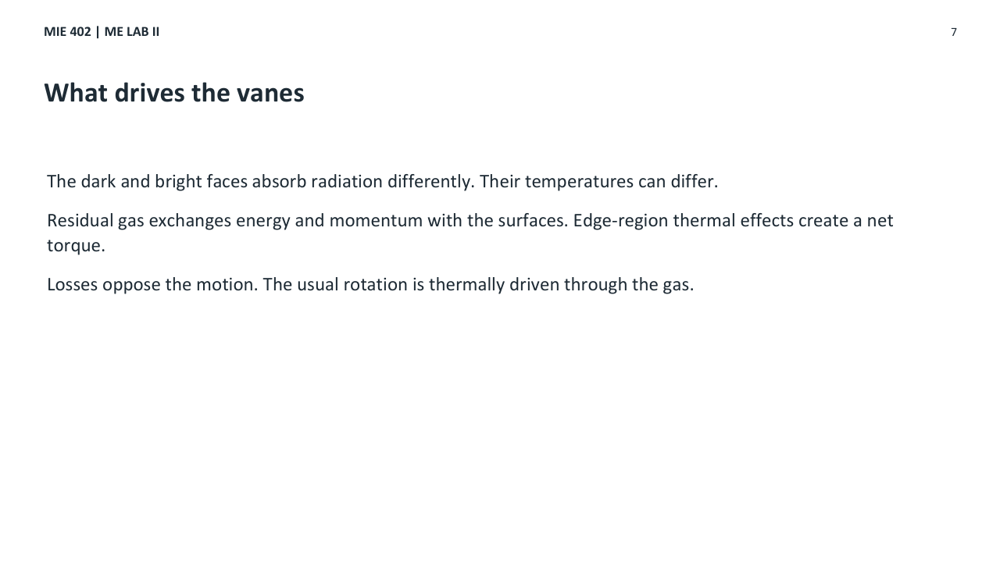
Explanation
The dark and bright faces absorb radiation differently. Their temperatures can differ.
Residual gas exchanges energy and momentum with the surfaces. Edge-region thermal effects create a net torque.
Losses oppose the motion. The usual rotation is thermally driven through the gas.
https://www.math.hkust.edu.hk/~makxu/PAPER/Crookes-ugks.pdf and https://arxiv.org/abs/1512.02590. Avoid attributing rotation solely to unequal uniform pressure or ordinary buoyant convection.
8. Where the Knudsen number enters
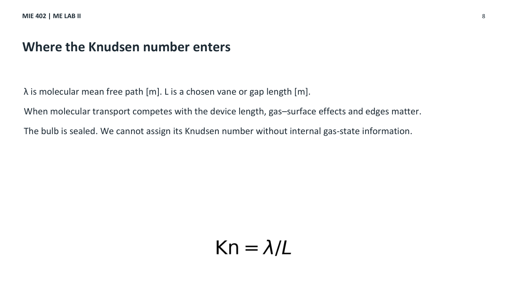
Explanation
λ is molecular mean free path [m]. L is a chosen vane or gap length [m].
When molecular transport competes with the device length, gas–surface effects and edges matter.
The bulb is sealed. We cannot assign its Knudsen number without internal gas-state information.
Do not infer bulb pressure from rotation alone. The molecular classroom activity represents a limiting wall problem; it does not establish the apparatus Knudsen number.
9. Lux and radiant power
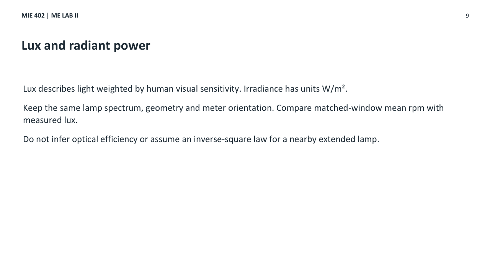
Explanation
Lux describes light weighted by human visual sensitivity. Irradiance has units W/m².
Keep the same lamp spectrum, geometry and meter orientation. Compare matched-window mean rpm with measured lux.
Do not infer optical efficiency or assume an inverse-square law for a nearby extended lamp.
10. Heating makes this more than a speed-counting exercise
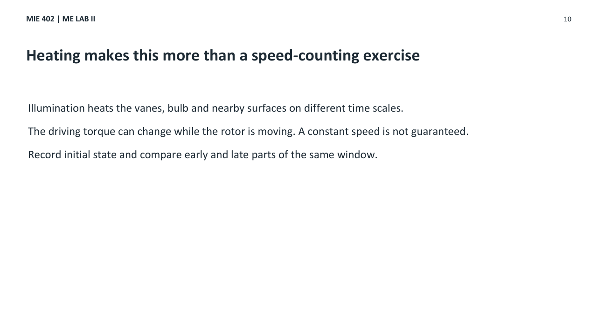
Explanation
Illumination heats the vanes, bulb and nearby surfaces on different time scales.
The driving torque can change while the rotor is moving. A constant speed is not guaranteed.
Record initial state and compare early and late parts of the same window.
A warmer background can change heat transfer as well as contrast. A changed speed alone does not identify a unique cause. Keep geometry fixed, check passages and use repeats to distinguish measurement problems from thermal history.
11. What the video measures
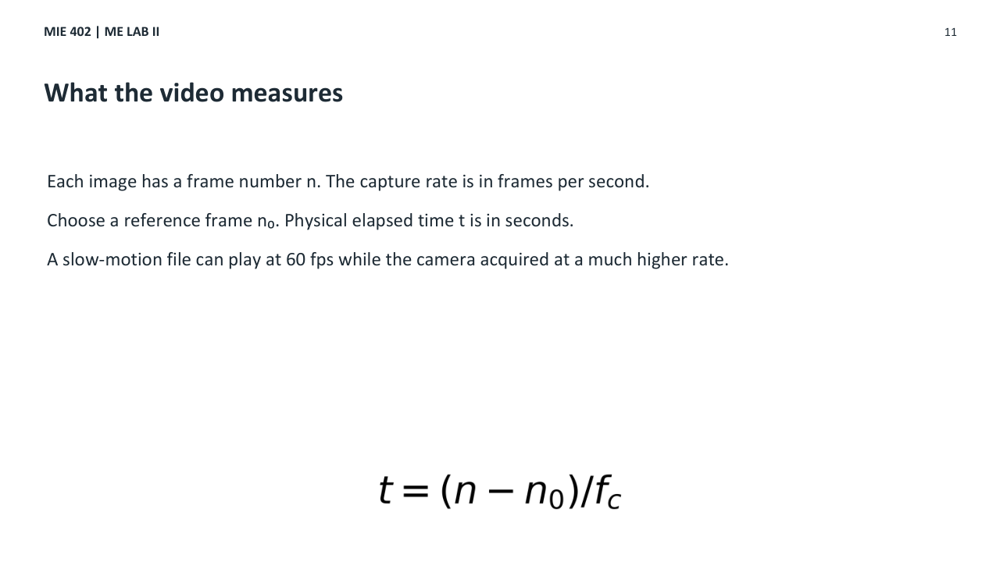
Explanation
Each image has a frame number n. The capture rate is in frames per second.
Choose a reference frame n₀. Physical elapsed time t is in seconds.
A slow-motion file can play at 60 fps while the camera acquired at a much higher rate.
12. A passage is not always a revolution
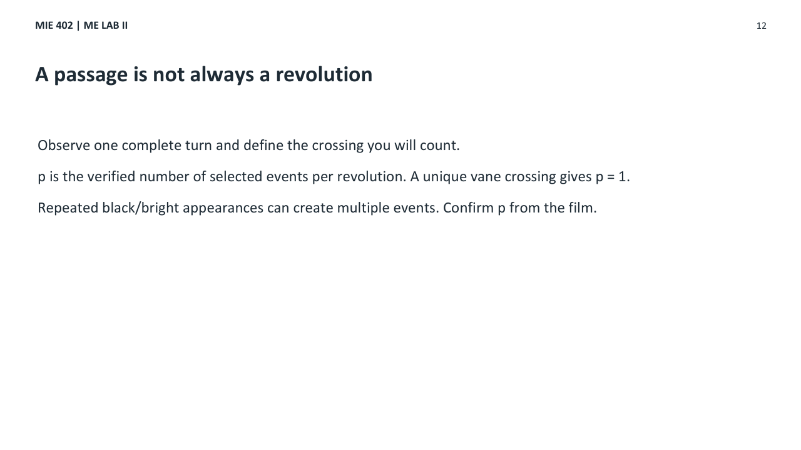
Explanation
Observe one complete turn and define the crossing you will count.
p is the verified number of selected events per revolution. A unique vane crossing gives p = 1.
Repeated black/bright appearances can create multiple events. Confirm p from the film.
13. From event counts to rotation speed
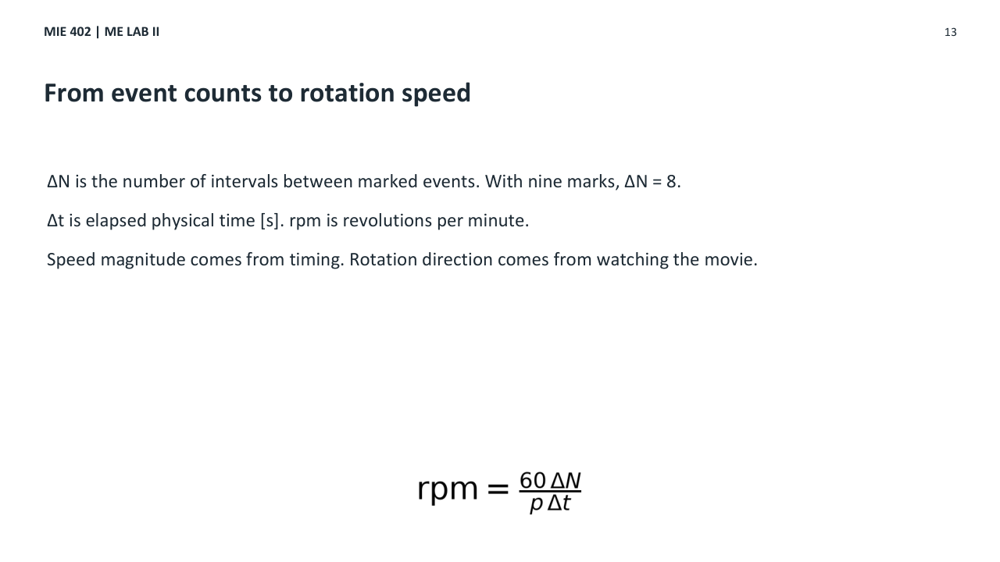
Explanation
ΔN is the number of intervals between marked events. With nine marks, ΔN = 8.
Δt is elapsed physical time [s]. rpm is revolutions per minute.
Speed magnitude comes from timing. Rotation direction comes from watching the movie.
14. Worked timing example
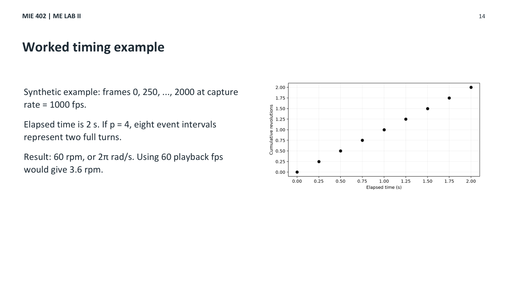
Explanation
Synthetic example: frames 0, 250, ..., 2000 at capture rate = 1000 fps.
Elapsed time is 2 s. If p = 4, eight event intervals represent two full turns.
Result: 60 rpm, or 2π rad/s. Using 60 playback fps would give 3.6 rpm.
15. Changing speed during start-up
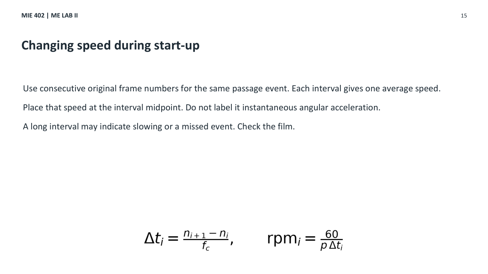
Explanation
Use consecutive original frame numbers for the same passage event. Each interval gives one average speed.
Place that speed at the interval midpoint. Do not label it instantaneous angular acceleration.
A long interval may indicate slowing or a missed event. Check the film.
16. Rotational dynamics
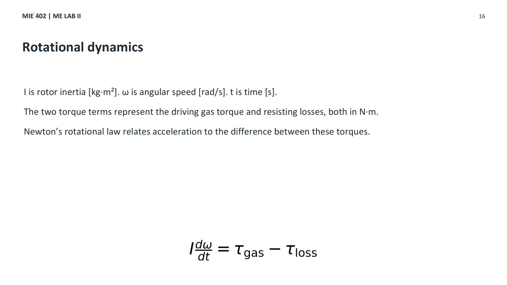
Explanation
I is rotor inertia [kg·m²]. ω is angular speed [rad/s]. t is time [s].
The two torque terms represent the driving gas torque and resisting losses, both in N·m.
Newton’s rotational law relates acceleration to the difference between these torques.
17. A simple transient approximation
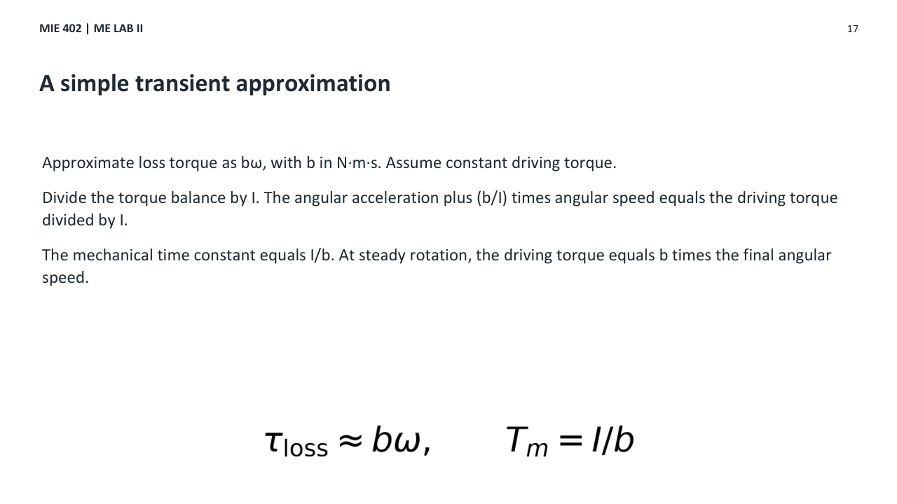
Explanation
Approximate loss torque as bω, with b in N·m·s. Assume constant driving torque.
Divide the torque balance by I. The angular acceleration plus (b/I) times angular speed equals the driving torque divided by I.
The mechanical time constant equals I/b. At steady rotation, the driving torque equals b times the final angular speed.
18. Solution of the previous ODE
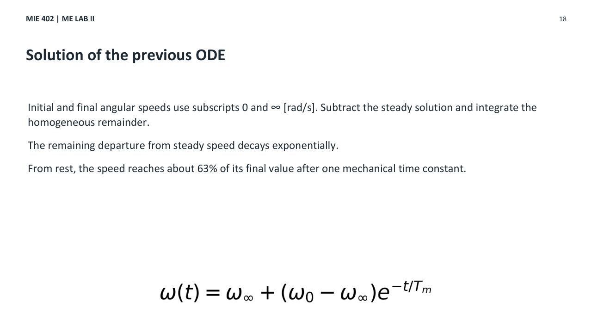
Explanation
Initial and final angular speeds use subscripts 0 and ∞ [rad/s]. Subtract the steady solution and integrate the homogeneous remainder.
The remaining departure from steady speed decays exponentially.
From rest, the speed reaches about 63% of its final value after one mechanical time constant.
19. Heating can change the response
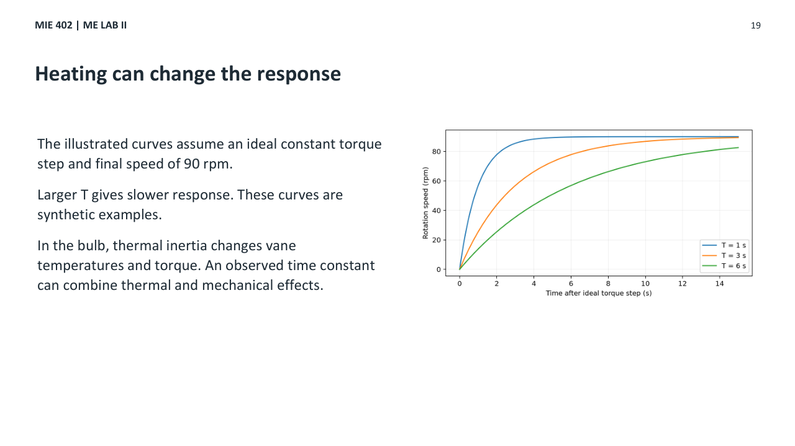
Explanation
The illustrated curves assume an ideal constant torque step and final speed of 90 rpm.
Larger T gives slower response. These curves are synthetic examples.
In the bulb, thermal inertia changes vane temperatures and torque. An observed time constant can combine thermal and mechanical effects.
20. Bench step 1: assemble and measure
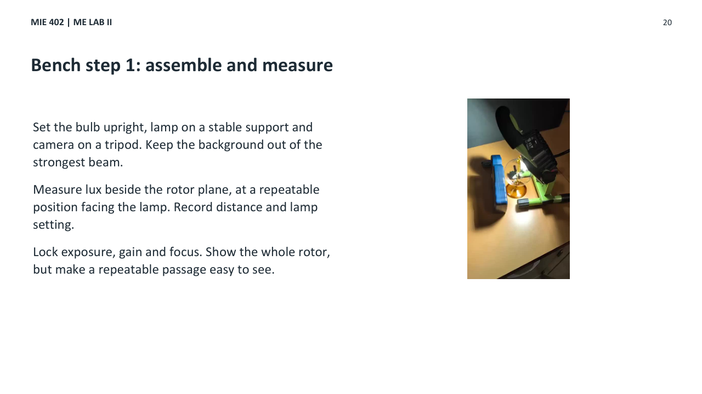
Explanation
Set the bulb upright, lamp on a stable support and camera on a tripod. Keep the background out of the strongest beam.
Measure lux beside the rotor plane, at a repeatable position facing the lamp. Record distance and lamp setting.
Lock exposure, gain and focus. Show the whole rotor, but make a repeatable passage easy to see.
Use an instructor-approved lamp clearance. For the first pilot, begin around 30 cm if compatible with the lamp, then adjust only after checking visibility and heating. Background spacing of roughly 20–30 cm is a starting layout, not a calibrated heat-transfer boundary.
21. Bench step 2: prove that the movie is usable
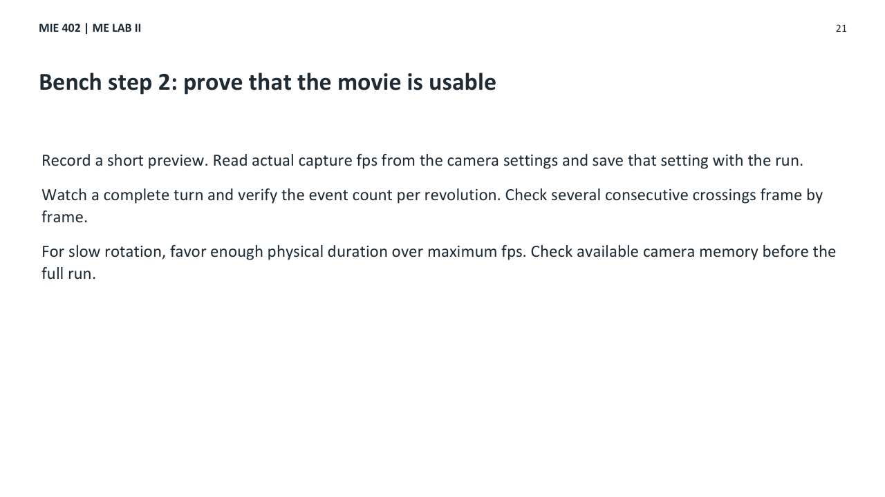
Explanation
Record a short preview. Read actual capture fps from the camera settings and save that setting with the run.
Watch a complete turn and verify the event count per revolution. Check several consecutive crossings frame by frame.
For slow rotation, favor enough physical duration over maximum fps. Check available camera memory before the full run.
Choose the lowest available capture rate that clearly resolves the passages; do not assume a universal Lab 6 rate. If Chronos memory cannot cover the required time, use a known-rate continuous phone recording. Never replace actual capture fps with slow-motion export fps.
22. Bench step 3: define the measurement window
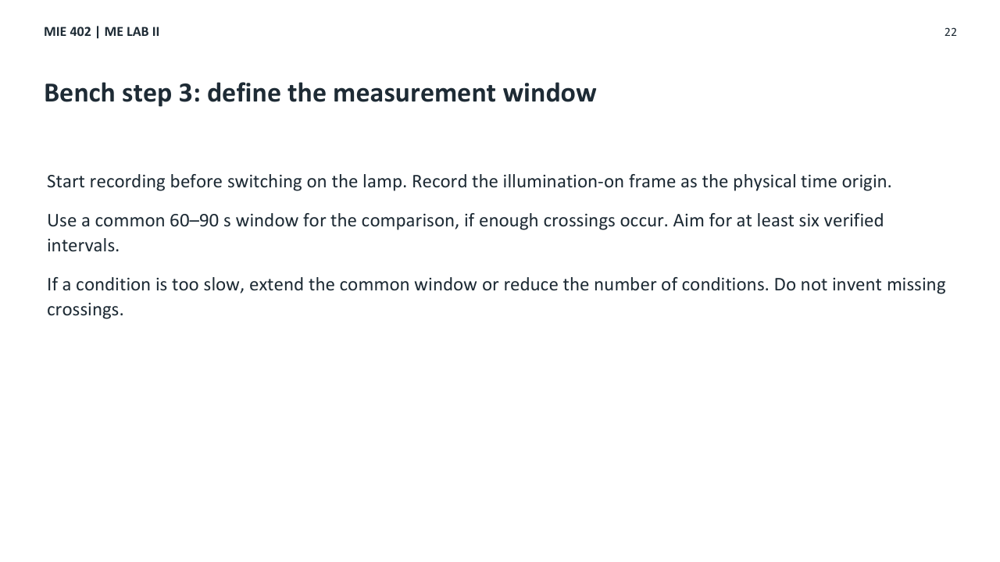
Explanation
Start recording before switching on the lamp. Record the illumination-on frame as the physical time origin.
Use a common 60–90 s window for the comparison, if enough crossings occur. Aim for at least six verified intervals.
If a condition is too slow, extend the common window or reduce the number of conditions. Do not invent missing crossings.
The code reports the time actually covered between accepted crossings. It does not pretend to measure unobserved parts of a requested window. Confirm this feasibility before assigning the full matrix to students.
23. Bench step 4: collect A, B, C and repeat A
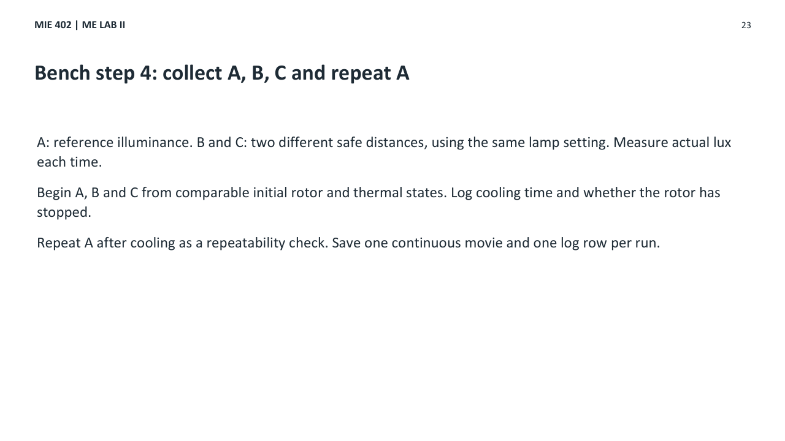
Explanation
A: reference illuminance. B and C: two different safe distances, using the same lamp setting. Measure actual lux each time.
Begin A, B and C from comparable initial rotor and thermal states. Log cooling time and whether the rotor has stopped.
Repeat A after cooling as a repeatability check. Save one continuous movie and one log row per run.
Core matrix: A1, B1, C1, A2. Distances are selected during the pilot from measured motion and safe lamp clearance, not prescribed as universal values. A1 versus A2 is a repeat only if initial conditions are comparable. If time permits, repeat B and C too.
24. Bench step 5: test thermal memory if time permits
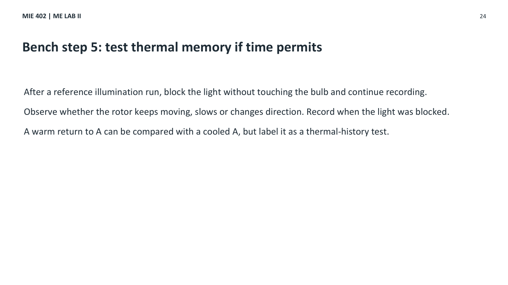
Explanation
After a reference illumination run, block the light without touching the bulb and continue recording.
Observe whether the rotor keeps moving, slows or changes direction. Record when the light was blocked.
A warm return to A can be compared with a cooled A, but label it as a thermal-history test.
Remaining thermal gradients can continue to generate gas torque after the light is blocked. This is not automatically a pure mechanical spin-down from which b/I can be identified. A reversed direction is an observation to explain, not a required result.
25. From a movie to defensible passage data
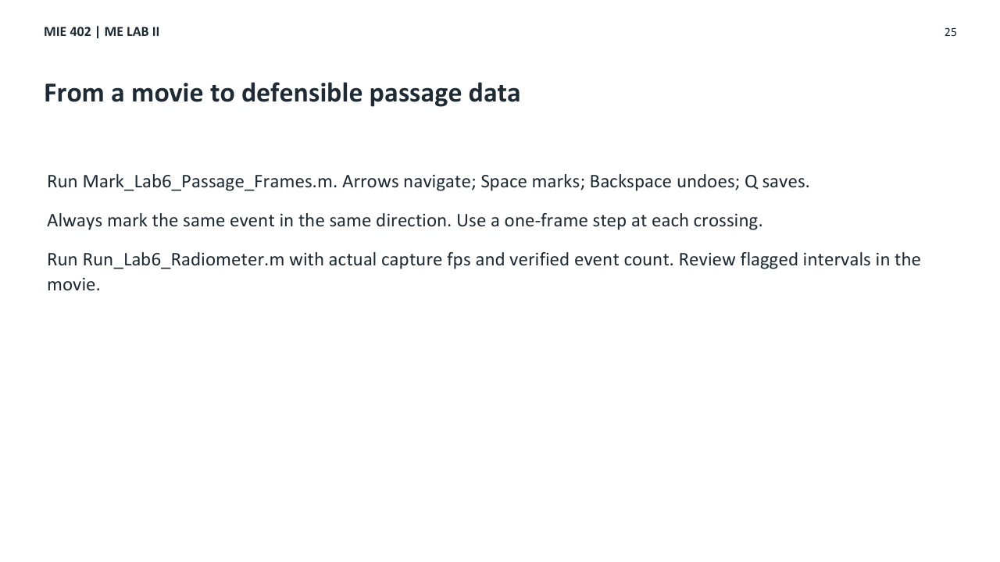
Explanation
Run Mark_Lab6_Passage_Frames.m. Arrows navigate; Space marks; Backspace undoes; Q saves.
Always mark the same event in the same direction. Use a one-frame step at each crossing.
Run Run_Lab6_Radiometer.m with actual capture fps and verified event count. Review flagged intervals in the movie.
Use original frame indices. Avoid differentiating a noisy wrapped angle. The saved-data analysis computes speed magnitudes; rotation direction is an observation from the film.
26. Comparing the runs in MATLAB
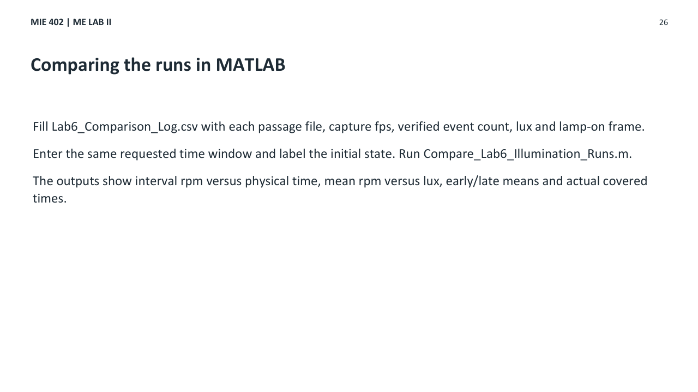
Explanation
Fill Lab6_Comparison_Log.csv with each passage file, capture fps, verified event count, lux and lamp-on frame.
Enter the same requested time window and label the initial state. Run Compare_Lab6_Illumination_Runs.m.
The outputs show interval rpm versus physical time, mean rpm versus lux, early/late means and actual covered times.
Passage files must contain increasing original integer frame indices in a column named frame. File paths may be relative to the comparison-log folder. The average is total verified turns divided by covered time. Warm-history runs remain explicitly labeled.
27. What the report should show
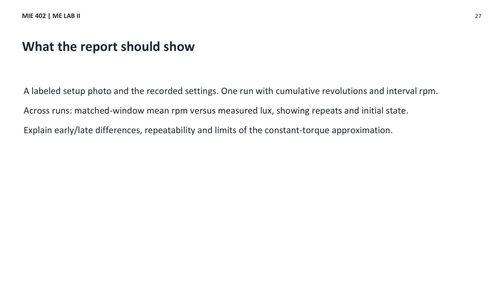
Explanation
A labeled setup photo and the recorded settings. One run with cumulative revolutions and interval rpm.
Across runs: matched-window mean rpm versus measured lux, showing repeats and initial state.
Explain early/late differences, repeatability and limits of the constant-torque approximation.
Use exported figures rather than screenshots. Call a speed steady only when the time record supports that description. Lux is an illuminance measurement, not absorbed radiant power.
28. Molecular Monte Carlo: the physical idea
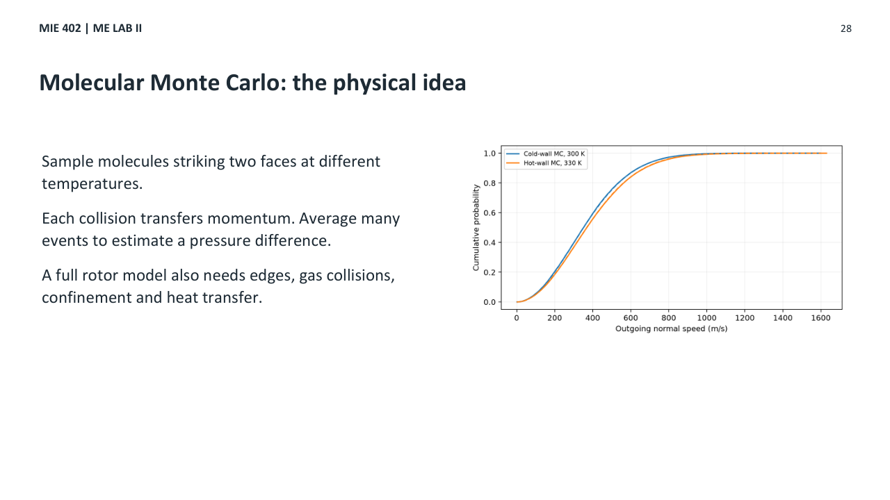
Explanation
Sample molecules striking two faces at different temperatures.
Each collision transfers momentum. Average many events to estimate a pressure difference.
A full rotor model also needs edges, gas collisions, confinement and heat transfer.
Required Q6 in the Pre-Lab 6 notebook. The plotted distributions use illustrative nitrogen, reservoir temperature 300 K, cold wall 300 K and hot wall 330 K. Both MC samples and analytical CDFs are shown. No parameter is inferred from the film.
29. The Monte Carlo algorithm
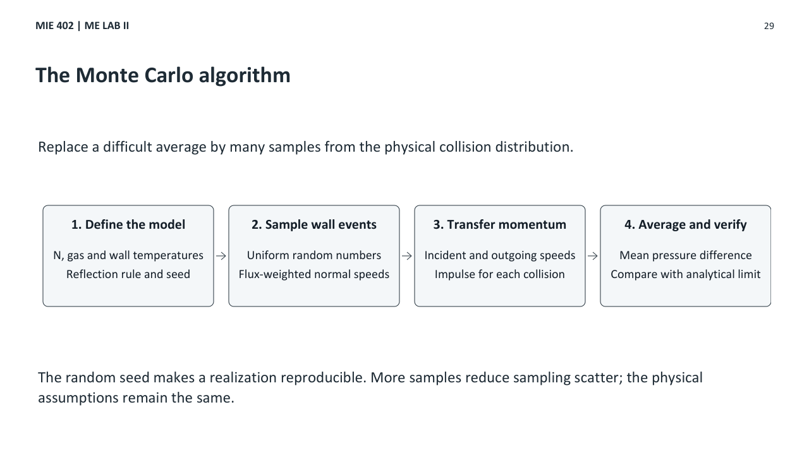
Explanation
Replace a difficult average by many samples from the physical collision distribution.
The random seed makes a realization reproducible. More samples reduce sampling scatter; the physical assumptions remain the same.
The notebook implements these four stages. The same incident samples are paired across faces so their contributions cancel in the pressure difference; diffuse outgoing samples are independent. This pairing reduces unrelated sampling scatter without changing the expectation.
30. Why wall-crossing velocities need special sampling
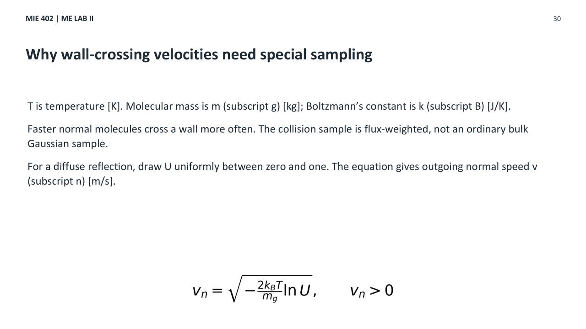
Explanation
T is temperature [K]. Molecular mass is m (subscript g) [kg]; Boltzmann’s constant is k (subscript B) [J/K].
Faster normal molecules cross a wall more often. The collision sample is flux-weighted, not an ordinary bulk Gaussian sample.
For a diffuse reflection, draw U uniformly between zero and one. The equation gives outgoing normal speed v (subscript n) [m/s].
The corresponding density is m_g v_n/(k_B T) exp[-m_g v_n²/(2k_B T)]. Tangential velocities are not needed for this normal-force teaching calculation. Specular reflection preserves the incident normal speed magnitude.
31. From molecular impulse to mean wall force
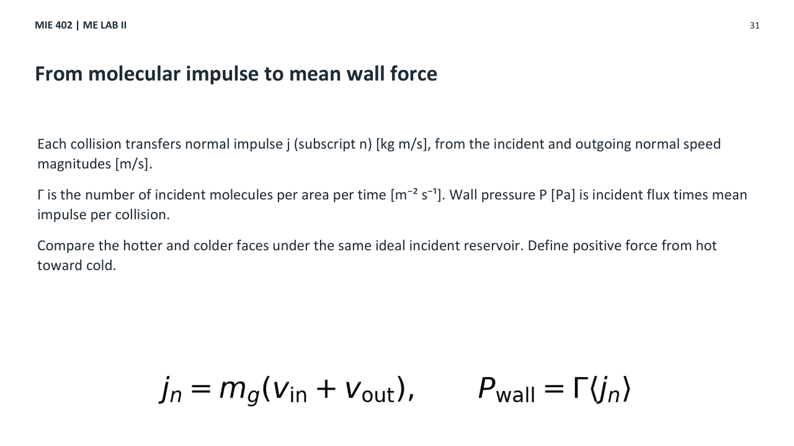
Explanation
Each collision transfers normal impulse j (subscript n) [kg m/s], from the incident and outgoing normal speed magnitudes [m/s].
Γ is the number of incident molecules per area per time [m⁻² s⁻¹]. Wall pressure P [Pa] is incident flux times mean impulse per collision.
Compare the hotter and colder faces under the same ideal incident reservoir. Define positive force from hot toward cold.
The gas particle loses the opposite momentum, so wall plus particle momentum is conserved at a collision. The thermal wall supplies or removes energy, so a wall collision is not an isolated elastic gas-gas collision.
32. The analytical check for the molecular activity
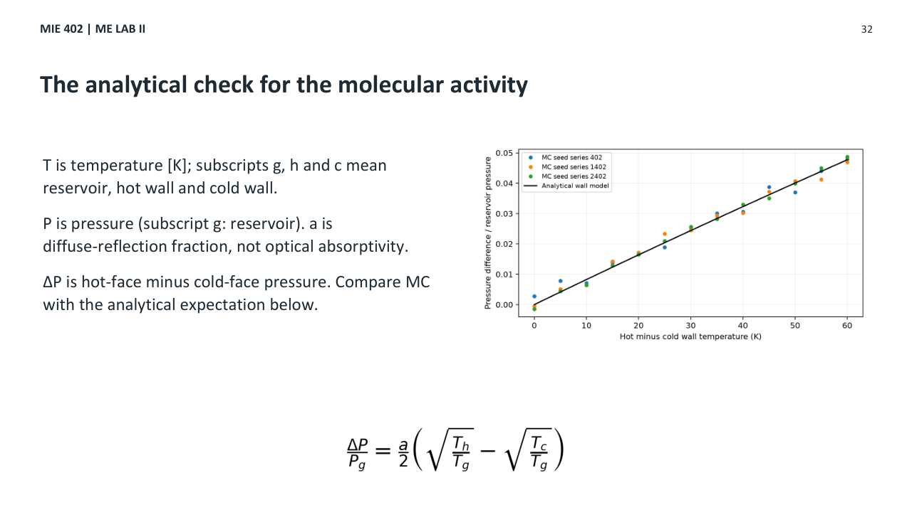
Explanation
T is temperature [K]; subscripts g, h and c mean reservoir, hot wall and cold wall.
P is pressure (subscript g: reservoir). a is diffuse-reflection fraction, not optical absorptivity.
ΔP is hot-face minus cold-face pressure. Compare MC with the analytical expectation below.
Independent free-molecular reservoirs supply equal incident flux to the faces. This conditional wall model neglects edge and enclosure interactions. It must not be extrapolated into a continuum pressure regime or treated as a measured bulb torque. The pressure ratio is normalized for P_g>0; dimensional force tends to zero as gas pressure tends to zero.
33. Why the number of molecular samples matters
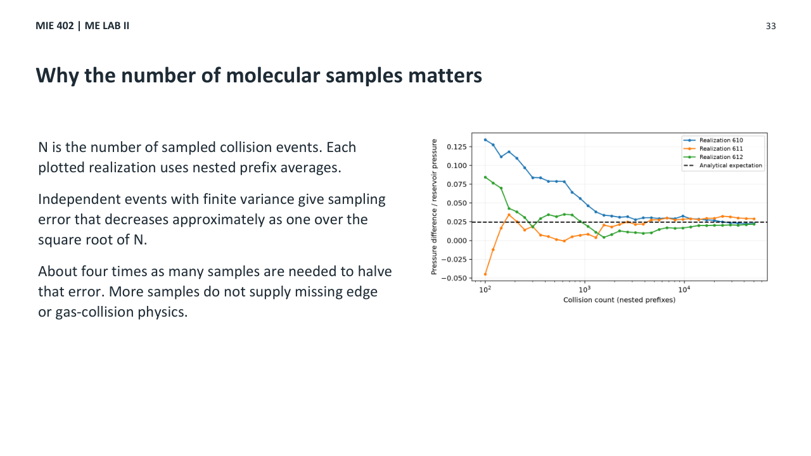
Explanation
N is the number of sampled collision events. Each plotted realization uses nested prefix averages.
Independent events with finite variance give sampling error that decreases approximately as one over the square root of N.
About four times as many samples are needed to halve that error. More samples do not supply missing edge or gas-collision physics.
Three independent seeded realizations are shown. Adjacent points along one curve reuse a prefix of the same sample; they are not independent measurements.
34. Required activity in the Pre-Lab 6 notebook
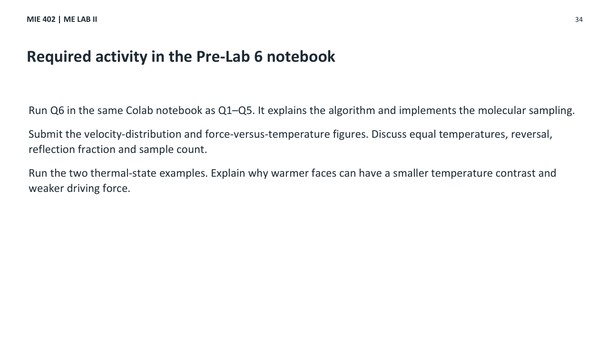
Explanation
Run Q6 in the same Colab notebook as Q1–Q5. It explains the algorithm and implements the molecular sampling.
Submit the velocity-distribution and force-versus-temperature figures. Discuss equal temperatures, reversal, reflection fraction and sample count.
Run the two thermal-state examples. Explain why warmer faces can have a smaller temperature contrast and weaker driving force.
Q6 is required. All code is supplied in the notebook; no external MATLAB package is needed for this activity. MATLAB is an alternative implementation of the same wall model, not an additional required duplicate submission.
35. Connecting the molecular activity to your measured runs
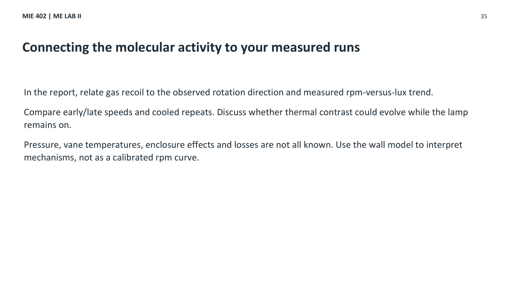
Explanation
In the report, relate gas recoil to the observed rotation direction and measured rpm-versus-lux trend.
Compare early/late speeds and cooled repeats. Discuss whether thermal contrast could evolve while the lamp remains on.
Pressure, vane temperatures, enclosure effects and losses are not all known. Use the wall model to interpret mechanisms, not as a calibrated rpm curve.
Required report connection after data collection. Do not overlay normalized wall pressure and measured rpm as if they were the same quantity. No laboratory data are required before the pre-lab deadline.
36. Before leaving the laboratory
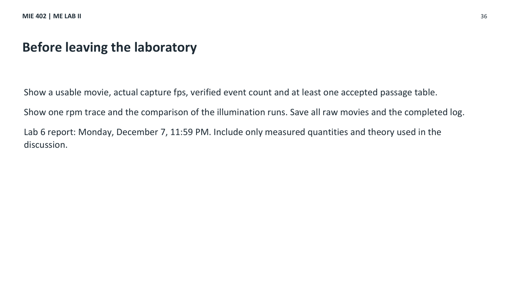
Explanation
Show a usable movie, actual capture fps, verified event count and at least one accepted passage table.
Show one rpm trace and the comparison of the illumination runs. Save all raw movies and the completed log.
Lab 6 report: Monday, December 7, 11:59 PM. Include only measured quantities and theory used in the discussion.
The required molecular activity supports interpretation alongside the experiment. An incomplete or unresolved passage record should be fixed while the apparatus is still available.